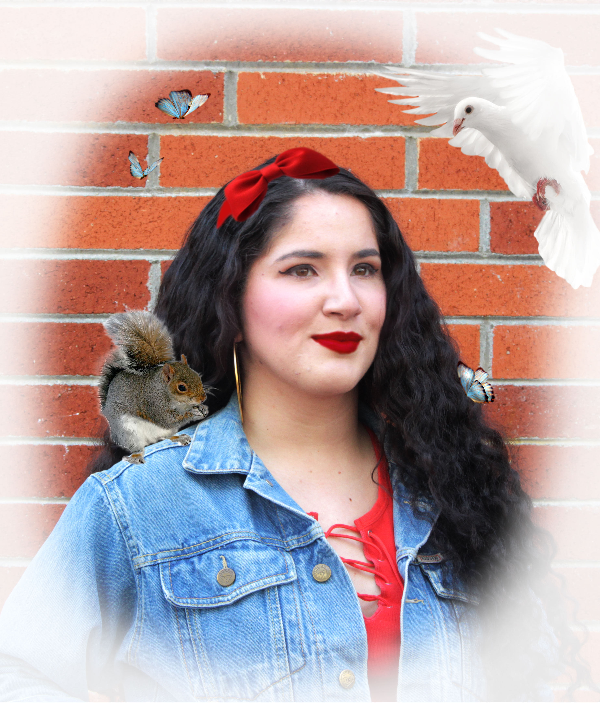

During that time of day, it was cloudy. The lighting made her look like she was not wearing any makeup besides the eyeliner. With the "pale skin", she sort of resembles Snow White. Instead of making her look like a Disney version of Snow White, I decided to transform her into a modern Snow White. I edited the image with Photoshop. The edits that I did were increasing the brightness, contrast, changed the hue of her lips (she was not wearing lipstick), brightned her eyes a bit, added a red bow headband, and added animals and butterflies around her. I also created my own white vignette so it can make it look more like a portrait.